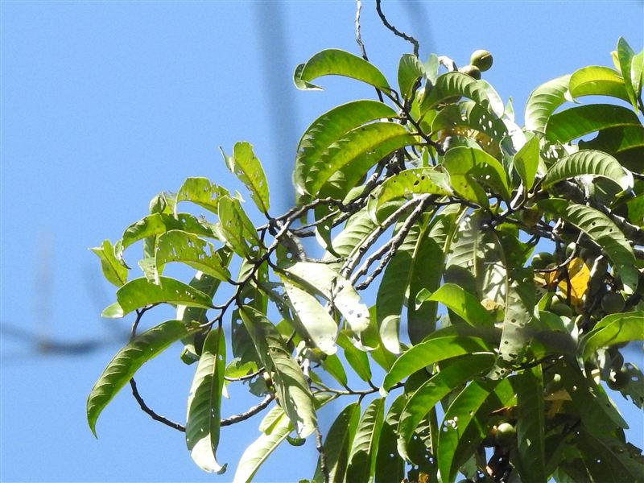

Myristicaceae
Horsfieldia
About the genus
Horsfieldia is a genus of roughly 100 dioecious trees ranging from the eastern Himalayan foothills across mainland Southeast Asia to Sumatra and the Malay Peninsula. One featured species has a large range across mainland Asia, while the other is restricted to a small pocket of the western Malay Peninsula and Sumatra.
Key characteristics
- Growth — Dioecious trees, roughly 100 species
- Leaves — Obovate-to-oblanceolate, with prominent lateral veins
- Fruit — Arillate capsular fruit relished by hornbills and imperial pigeons